Высшее образование дистанционно — это возможность получать знания и осваивать профессию психолога без привязки к месту и жесткому расписанию. Обучение проводится с применением дистанционных технологий, студенты изучают дисциплины онлайн, проходят практические занятия, получают доступ к учебным материалам и консультациям преподавателей. Дистанционный формат дает те же перспективы, что и очное обучение: выпускники получают дипломы государственного образца, осваивают профессиональные навыки и практическую психологию, могут пройти программы бакалавриата или профессиональную переподготовку на факультете психологии. Сегодня дистанционным обучением охватываются разные направления — от клинической психологии до психологического консультирования, от организационной до возрастной психологии. Чтобы помочь абитуриентам выбрать удобную форму получения высшего образования, мы составили рейтинг программ и вузов, где обучение проходит дистанционно и завершается получением диплома.
Информация обновлена:
ТОП онлайн-ВУЗов с программами высшего образования и с выдачей диплома государственного образца
- 🏆 Московский институт психологии (по промокоду onlinekursy скидка 🎁 10%)
- Психолого-педагогическое образование (онлайн-бакалавриат)
- Психология (онлайн-бакалавриат)
- Педагогическое образование (онлайн-бакалавриат)
- 🏆 Онлайн-Институт психологии Smart
- 🏆 Психодемия (по промокоду OnlineKursy действует скидка 🎁 5000 руб)
- Психология личности (магистратура)
- Психология управления - Бизнес-психология в цифровой среде (магистратура)
- Московский институт технологий и управления (по промокоду onlinekursy скидка 🎁 15%)
- Психологическое консультирование
- Клиническая психология
- Психоанализ
- Психология семейных отношений
- Коррекционная психология с основами логопедии
- Психология управления
- Педагог-психолог
- Логопед-дефектолог
- Коучинг и психологическое консультирование
- Организационная психология
- Психология и педагогика дополнительного образования детей
- Психология образования
- Московский Институт Профессионального Образования (по промокоду onlinekursy скидка 🎁 10%)
- Практическая психология
- Коучинг и психологическое консультирование
- Социальная психология
- Организационная психология
- ИППСС
- Психология семейных отношений
- Организационная психология
- Практическая психология
- Коучинг
- Детская психология
- Нетология
- Финансы и анализ данных
- Разработка IT‑продуктов и информационных систем
- Программные системы и автоматизация процессов разработки
- Проектный менеджмент
- Медиакоммуникации
- LegalTech: автоматизация юридических процессов
- Кибербезопасность
- Цифровые продукты: создание и развитие
- Управление цифровыми проектами
- Продуктовый дизайн
- Инженерия данных
- Продуктовый маркетинг и аналитика
- Разработка IT-продукта
- Инженерия машинного обучения
- Прикладной искусственный интеллект
- Современные технологии безопасных систем
- Skillfactory
- Науки о данных и машинное обучение
- Информационная безопасность
- Обработка естественного языка (NLP) в лингвистике и IT
- Разработка программного обеспечения
- Компьютерное зрение и нейронные сети
- Прикладной анализ данных и машинное обучение
- Яндекс Практикум
- Кибербезопасность
- Управление IT‑продуктами
- Науки о данных и искусственный интеллект
- Фронтенд- и бэкенд-разработка
- DevOps-инженер облачных сервисов
- Московский Институт Технологий и Управления (по промокоду onlinekursy скидка 🎁 15%)
- Юриспруденция
- Дизайн
- Информатика
- Маркетинг
- Менеджмент
- Строительство
- Теплоэнергетика и теплотехника
- Техносферная безопасность
- Электроэнергетика и электротехника
- Экономика
- Педагогическое образование
- Юриспруденция
- Дизайн
- Информатика
- Маркетинг
- Менеджмент
- Строительство
- Экономика
- Педагогическое образование
- Московский Институт Профессионального Образования (по промокоду onlinekursy скидка 🎁 10%)
Онлайн-Бакалавриат по психологии
Онлайн-магистратура по психологии
Онлайн-Бакалавриат по психологии
Направления онлайн-бакалавриата по психологии от ИППСС:
Онлайн-Бакалавриат:
Онлайн-магистратура:
Онлайн-магистратура:
Онлайн-магистратура:
ВУЗы с программами профессиональной переподготовки
- НАДПО (по промокоду onlinekursy действует скидка 🎁 5%)
- Московский институт профессионального образования (по промокоду onlinekursy действует скидка 🎁 10%)
- Moscow Business Academy (по промокоду onlinekursy скидка 🎁 10%)
- Eduson Academy (по промокоду onlinekursy скидка 🎁 5%)
- НИИДПО
- Talentsy (по промокоду EDPART5 скидка 🎁 5%)
- НЦРДО (по промокоду onlinekursy действует скидка 🎁 5%)
- Институт профессионального образования
- Moscow Business School
- Русская Школа Управления
- АПОК
- НИПКЭФ (по промокоду onlinekursy действует скидка 🎁 5%)
- SF Education (по промокоду onlinekursy скидка 🎁 15%)
Отличительные преимущества каждого ВУЗа с дистанционными программами высшего образования
| № | Курс / Школа | Отличительные преимущества | Ссылка |
|---|---|---|---|
| 🥇 | Московский институт психологии | Дистанционный формат, дипломы государственного образца, акцент на практику, доступ к материалам 24/7, совмещение учебы с работой | Перейти |
| 🥈 | Институт психологии Smart | Практика с реальными клиентами, поддержка кураторов 24/7, диплом магистра ТГУ + диплом ДПО, центр карьеры | Перейти |
| 🥉 | Психодемия | Международные сертификаты (ICF), обширная практика под супервизией, программы от 5 месяцев до 2 лет, дипломы гос. образца | Перейти |
| 4 | MITM | Широкий выбор направлений психологии, рассрочка без переплат, карьерное сопровождение, гибкий онлайн-формат | Перейти |
| 5 | МИПО | Онлайн-обучение с гибким графиком, программы от экспертов, диплом государственного образца, помощь с трудоустройством, минимум документов, практическая направленность. | Перейти |
| 6 | ИППСС | гибкий онлайн-формат, практическая направленность программ, поддержка кураторов и преподавателей, доступ к материалам 24/7, актуальные специализации, возможность совмещать обучение с работой, удобная цифровая платформа, ориентир на профессиональное применение знаний | Перейти |
| 7 | Нетология | Совместные программы с НИУ ВШЭ, МФТИ, ИТМО; проекты от компаний, хакатоны и стажировки, дипломы бакалавра и магистра | Перейти |
| 8 | Skillfactory | Партнерство с топ-10 вузами RAEX, практические кейсы и хакатоны, дипломы государственного образца, помощь в трудоустройстве | Перейти |
| 9 | Яндекс Практикум | Разработка программ совместно с Яндексом, реальные проекты, дипломы гос. образца, гибкий график для совмещения с работой | Перейти |
| 10 | MITM | Программы в юриспруденции, экономике, педагогике и др., льготы и скидки, диплом гос. образца, карьерное сопровождение | Перейти |
| 11 | МИПО | Институт отличает онлайн-обучение, диплом гособразца, преподаватели-практики, центр занятости и гибкие условия оплаты. | Перейти |
| 12 | НАДПО | Скидки до 65 %, дипломы гос. образца, более 80 % преподавателей – кандидаты и доктора наук, доступ к библиотеке бессрочно | Перейти |
| 13 | МИПО | 12-летний опыт, диплом гос. образца с международным приложением, гибкие формы обучения, доступ к материалам 24/7 | Перейти |
| 14 | Moscow Business Academy | Программы признаны в Европе, скидки до 65 %, более 165 преподавателей с международным опытом, диплом гос. образца | Перейти |
| 15 | Eduson Academy | Программы по психологии, бизнесу, IT и дизайну, гибкий график, акцент на практику, дипломы гос. образца и сертификаты | Перейти |
| 16 | АНО «НИИДПО» | Стоимость от 700 руб., дипломы гос. образца, обучение через мобильное приложение, программы до 2 лет | Перейти |
| 17 | Talentsy | Стоимость от 0 руб., дипломы MBA и гос. образца, налоговый вычет 13 %, более 25 программ по психологии, моде и нутрициологии | Перейти |
| 18 | НЦРДО | Акции и скидки до 70 %, программы по психологии, педагогике и экономике, дипломы гос. образца, партнерство со «Сколково» | Перейти |
| 19 | ИПО | Скидки до 60 %, широкий выбор направлений (от психологии до IT), дипломы гос. образца, сопровождение кураторов | Перейти |
| 20 | Moscow Business School | 18 лет опыта, очные модули + онлайн, MBA и магистратура, преподаватели – практики, дипломы гос. и международного образца | Перейти |
| 21 | Русская Школа Управления | Международный сертификат ISO 9001, более 1300 преподавателей-практиков, ежегодно обучается 15 000 студентов | Перейти |
| 22 | АПОК | Программы от 250 часов, рассрочка без переплат, дипломы гос. образца, акцент на практические знания и гибкий график | Перейти |
| 23 | НИПКЭФ | Программы соответствуют ФГОС, скидки и рассрочка до 12 мес., дипломы гос. образца, преподаватели – кандидаты и доктора наук | Перейти |
| 24 | SF Education | Скидки до 75 %, рассрочка до 18 мес., дипломы гос. образца, акцент на финансы и Data Science, консультации преподавателей | Перейти |
1. 🏆 Московский институт психологии
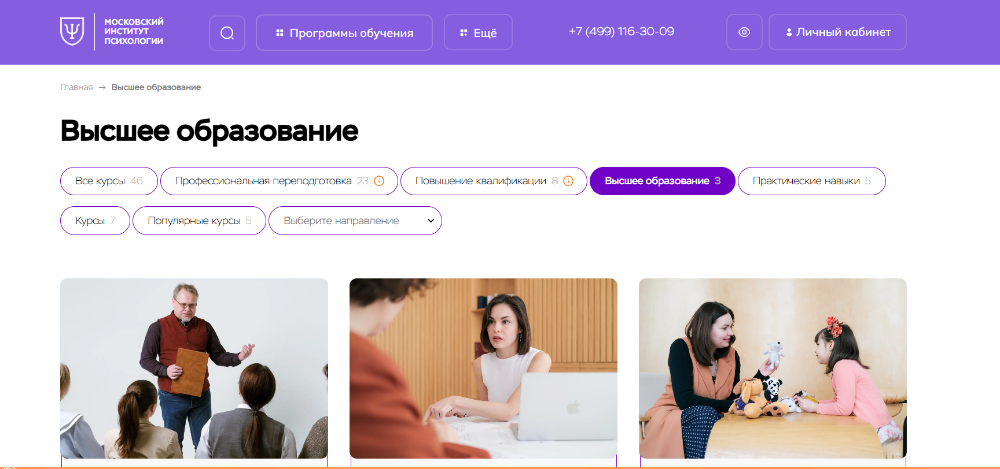
✅ Официальный сайт: mip.institute
- 💸 Стоимость – от 45 000 рублей за семестр или от 80 000 рублей за год, действует скидка до –30 % на программы обучения, предусмотрены акции и рассрочка
- 📚 Формат – обучение проводится дистанционно с применением видеолекций, практических заданий, вебинаров, электронных материалов и кураторского сопровождения
- ⏳ Продолжительность – курсы профессиональной переподготовки занимают от нескольких месяцев, программы бакалавриата длятся 3–4,5 года
- 📜 Документ – выпускники получают дипломы государственного образца, подтверждённые в федеральном реестре
Учебный процесс института ориентирован на практическое применение современных методов психологической науки и использование дистанционных технологий. Студенты получают доступ к удобной платформе и учебным материалам в любое время. Образовательный процесс сочетает теорию с практическими навыками, что позволяет выпускникам освоить профессию психолога и подготовиться к работе в реальных условиях. Обучение проходит в формате, удобном для совмещения с личной жизнью и профессиональной деятельностью. Студенты изучают психологическую диагностику, методы консультирования и практическую психологию. По окончании программы выпускники получают высшее психологическое образование и диплом государственного образца.
Направления подготовки:
- Психолого–педагогическое образование (онлайн-бакалавриат)
- Психология (онлайн-бакалавриат)
- Педагогическое образование (онлайн-бакалавриат)
Преимущества и особенности:
- возможность учиться дистанционно с применением современных образовательных технологий;
- выдача диплома государственного образца после окончания обучения;
- доступ к учебным материалам и платформе в любое время;
- поддержка преподавателей и кураторов на протяжении всего процесса обучения;
- акцент на практическое занятие и освоение профессиональных навыков;
- совмещение учёбы с работой и другими делами благодаря дистанционному формату;
- широкий выбор направлений психологии и педагогики.
Отзывы учеников:
Студенты московской школы отмечают удобную платформу, качественные учебные материалы и возможность совмещать учебу с работой. Многие подчеркивают, что обучение дистанционно позволяет получать практические знания и сразу применять их в профессиональной деятельности. Отмечается доступность преподавателей и внимание кураторов, а также современные подходы к подготовке специалистов.
Перейти на официальный сайт ВУЗа2. 🏆 Институт психологии Smart
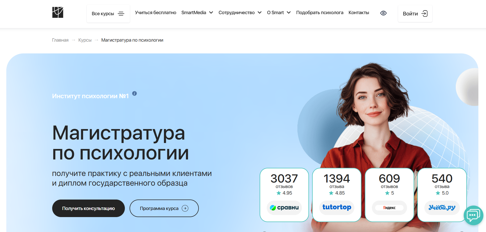
✅ Официальный сайт: smart-inc.ru
- 💸 Стоимость – от 106 200 ₽ за семестр, возможны кредит, рассрочка и налоговый вычет 13 %
- 📚 Формат – дистанционный формат обучения: видеолекции, вебинары, практика с реальными клиентами, кураторская поддержка 24/7, участие в проектах SmartHelp и SmartMental
- ⏳ Продолжительность – 2–2,5 года в зависимости от выбранного направления
- 📜 Документ – диплом магистра государственного образца ТГУ + диплом ДПО от Smart
Программы института ориентированы на дистанционное обучение с применением дистанционных технологий и практическим подходом. Студенты получают доступ к современным образовательным платформам, где обучение проводится в удобном онлайн-формате. Благодаря работе с реальными клиентами уже в процессе обучения формируются практические навыки и профессиональные компетенции. Особое внимание уделяется психологическому консультированию, клинической психологии и смежным направлениям. Студенты изучают дисциплины, направленные на развитие практического мышления и психологической диагностики. Выпускники получают дипломы государственного образца и документы о профессиональной переподготовке, что открывает путь к карьерному росту в сфере психологии. Программы института позволяют пройти дистанционное обучение без отрыва от работы и совмещать учебный процесс с личными делами.
Направления подготовки:
Преимущества и особенности:
- полностью дистанционная форма обучения, которая позволяет совмещать учебу и работу;
- практическое занятие с первыми клиентами уже на втором году обучения;
- поддержка кураторов и преподавателей – кандидатов и докторов наук;
- выпускники получают дипломы государственного образца и дипломы ДПО;
- возможность вступления в профессиональные сообщества психологов (ОППЛ, АППП);
- центр карьеры помогает выпускникам в трудоустройстве и развитии;
- гибкая система оплаты и возможность зафиксировать стоимость обучения заранее.
Отзывы учеников:
Студенты отмечают высокий уровень преподавателей, практикоориентированные образовательные программы и удобный дистанционный формат. Многие подчеркивают, что обучение проходит с применением дистанционных технологий, а полученные практические навыки позволяют работать с клиентами уже во время учебы. Среди плюсов также выделяют доступность кураторов, гибкий график и дипломы государственного образца.
Перейти на официальный сайт ВУЗа3. 🏆 Психодемия
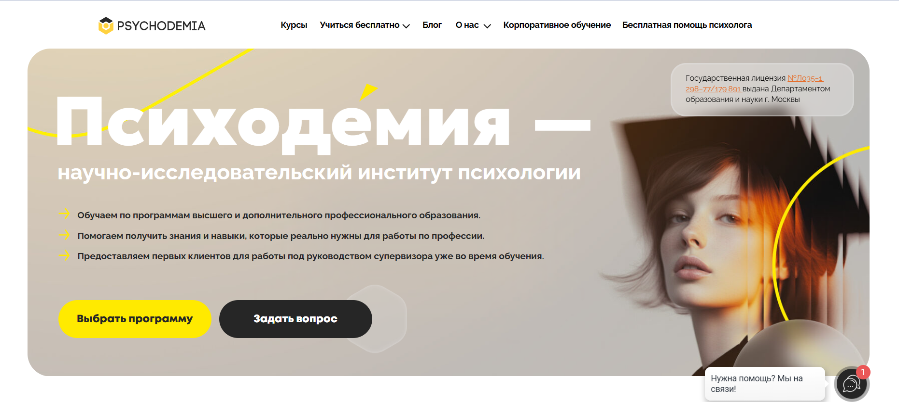
✅ Официальный сайт: psychodemia.ru
- 💸 Стоимость – начинается от 180 000 рублей, предусмотрены скидки до 20 %, возможна рассрочка оплаты обучения
- 📚 Формат – обучение проходит дистанционно: видеолекции, практические занятия, супервизии, домашние задания, работа в мини-группах, доступ к материалам онлайн
- ⏳ Продолжительность – от 5 месяцев до 2 лет в зависимости от программы; переподготовка и курсы повышения квалификации – от 72 до 1200+ ак. часов
- 📜 Документ – выпускники получают дипломы государственного образца, удостоверения о повышении квалификации или международные сертификаты (например, ICF)
Институт специализируется на подготовке практикующих специалистов в сфере психологии дистанционно. Учебный процесс строится с акцентом на практические навыки, включая реальные консультации под наблюдением преподавателей. Используются современные дистанционные технологии, обеспечивающие студентам удобный доступ к материалам в онлайне. В отличие от очного формата, обучение проводится с применением интерактивных методик и поддержкой кураторов. По окончании обучения студенты получают дипломы государственного образца, которые заносятся в федеральный реестр. В программе акцент делается на профессиональное развитие, освоение методов психологической помощи и организационной психологии. Образование дистанционно позволяет совмещать учебу и работу, а образовательные программы соответствуют требованиям профессиональных стандартов. Выпускники получают качественные знания и практический опыт, необходимые для начала частной практики или работы в центрах психологической помощи.
Направления подготовки:
- Психология личности (магистратура)
- Психология управления - Бизнес-психология в цифровой среде (магистратура)
Преимущества и особенности:
- официальная лицензия и дипломы государственного образца;
- обучение дистанционно с практическим применением знаний и методик психологической науки;
- поддержка кураторов, преподавателей и сообщества выпускников;
- обширная практика с реальными клиентами под супервизией;
- гибкая система оплаты и рассрочки;
- программы составлены признанными экспертами и исследователями в области психологии;
- современные образовательные технологии и удобная платформа для онлайн-доступа.
Отзывы учеников:
Студенты отмечают высокое качество программ, большое количество практики и поддержку преподавателей. Чаще всего выпускники подчеркивают, что уже в процессе обучения смогли начать консультировать и получать первых клиентов. Отмечают удобный дистанционный формат и доступные материалы, которые помогают совмещать учебу с работой.
Перейти на официальный сайт ВУЗа4. Московский институт технологий и управления
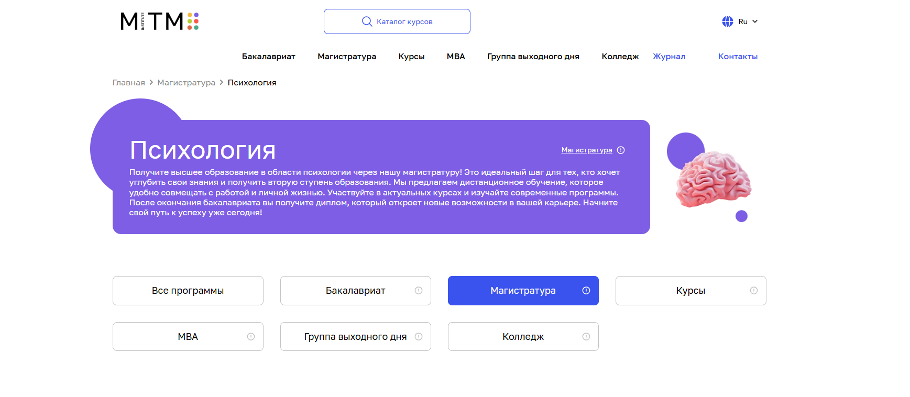
✅ Официальный сайт: mitm.institute
- 💸 Стоимость – от 9170 ₽ в месяц, возможна рассрочка без переплат
- 📚 Формат – обучение проводится в дистанционном формате с применением образовательных технологий: онлайн-лекции, вебинары, тесты, практические занятия, доступ к учебным материалам
- ⏳ Продолжительность – магистратура и программы бакалавриата занимают 2–4,5 года; курсы и переподготовка – от нескольких месяцев
- 📜 Документ – выпускники получают дипломы государственного образца, которые заносятся в федеральный реестр
Институт сочетает дистанционное обучение с практическим применением знаний. Студенты получают доступ к современным образовательным платформам и изучают психологию дистанционно в удобном формате. Учебный процесс построен так, чтобы совмещать обучение с работой и личной жизнью. Сильный преподавательский состав помогает освоить профессию психолога, развить профессиональные навыки и получить практический опыт. После окончания обучения выпускники получают диплом государственного образца, открывающий широкие карьерные возможности. Использование дистанционных технологий обеспечивает гибкость образовательного процесса и высокий уровень подготовки специалистов. Студенты приобретают практические знания, необходимые для работы в сфере психологии, консультирования и педагогики. Программы построены с акцентом на развитие профессиональных компетенций и практическому применению в реальных ситуациях.
Направления подготовки:
Онлайн-Бакалавриат по психологии
- Психологическое консультирование
- Клиническая психология
- Психоанализ
- Психология семейных отношений
- Коррекционная психология с основами логопедии
- Психология управления
- Педагог-психолог
- Логопед-дефектолог
Онлайн-магистратура по психологии
- Коучинг и психологическое консультирование
- Организационная психология
- Психология и педагогика дополнительного образования детей
- Психология образования
Преимущества и особенности:
- гибкий дистанционный формат, позволяющий учиться в любом удобном месте;
- рассрочка и помесячная оплата без скрытых переплат;
- поддержка студентов на всех этапах – от подачи документов до получения диплома;
- выпускники получают дипломы государственного образца;
- современные образовательные платформы и актуальные программы;
- карьерное сопровождение – помощь с трудоустройством, составлением резюме и подготовкой к собеседованиям;
- льготы и скидки для победителей олимпиад, многодетных семей, студентов с особыми условиями.
Отзывы учеников:
Студенты отмечают удобный дистанционный формат, доступность преподавателей и персональный подход. Многие выпускники подчеркивают, что обучение дистанционно помогает совмещать учебу с работой. В отзывах часто выделяют качественные учебные материалы, практические занятия и возможность быстро применять полученные знания в профессии психолога. Также положительно оценивают организацию учебного процесса и поддержку наставников.
Перейти на официальный сайт ВУЗа5. Московский институт профессионального образования (МИПО) – факультет психологии, бакалавриат
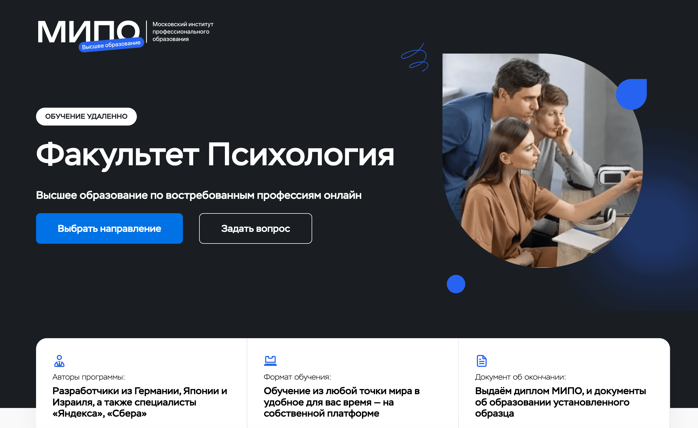
✅ Официальный сайт: mipo.msk.ru
- 💸 Стоимость – от 0 до 180 000 рублей в зависимости от выбранной программы и длительности обучения
- 📚 Формат – дистанционное обучение на собственной онлайн-платформе: видеолекции, тесты, практические задания, кураторская поддержка, гибкий график
- ⏳ Продолжительность – от 3 месяцев до 4,5 лет, в зависимости от направления (курсы, переподготовка, бакалавриат)
- 📜 Документ – диплом МИПО и документы государственного образца установленного Минобрнауки РФ
Факультет психологии МИПО предлагает обучение по востребованным профессиям в дистанционном формате. Учебные программы разработаны экспертами из Германии, Японии, Израиля, а также специалистами компаний «Яндекс» и «Сбер». Онлайн-платформа института позволяет учиться из любой точки мира в удобное время. Выпускники получают качественные знания, подтвержденные официальным дипломом, и могут начать карьеру в сфере психологии, образования или коучинга. Центр занятости помогает студентам с трудоустройством в крупных компаниях и подбором стажировок. Программы ориентированы на практику и соответствуют актуальным требованиям рынка труда.
Направления подготовки:
- Практическая психология
- Коучинг и психологическое консультирование
- Социальная психология
- Организационная психология
Преимущества и особенности:
- обучение проходит полностью онлайн, без привязки к месту и времени;
- программы разрабатывают международные специалисты и ведущие эксперты российских компаний;
- дипломы государственного образца и признание работодателями;
- индивидуальное сопровождение поступления и помощь менеджеров приёмной комиссии;
- центр занятости студентов помогает с резюме, собеседованиями и поиском работы;
- возможность выбора длительности и стоимости обучения под личные цели;
- актуальные материалы и практическая направленность курсов;
- гибкие условия поступления и минимум необходимых документов.
Отзывы учеников:
Студенты отмечают высокий уровень преподавания, внимательных кураторов и удобный формат обучения. Часто подчеркивается доступность платформы и возможность совмещать учёбу с работой. По отзывам, программа помогает получить реальные практические навыки, востребованные в сфере психологии и коучинга.
Перейти на официальный сайт ВУЗа6. Институт прикладной психологии в социальной сфере
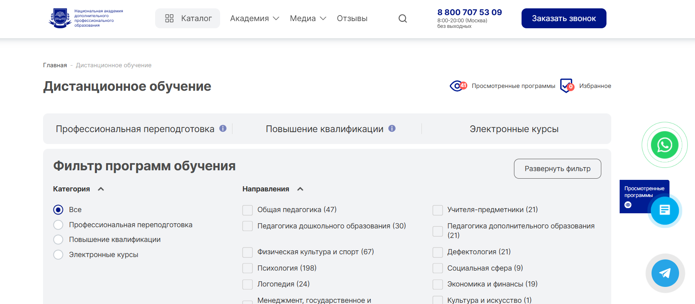
✅ Официальный сайт: ippss.ru
- 💸 Стоимость – цены зависят от программы, в среднем доступны разные варианты оплаты дистанционных образовательных траекторий
- 📚 Формат – онлайн обучение, видеолекции, вебинары, практические задания, тесты и обратная связь с преподавателями
- ⏳ Продолжительность – программы варьируются по длительности, часть рассчитана на несколько месяцев, другие требуют более длительного освоения
- 📜 Документ – по завершении выдаются дипломы и удостоверения о профессиональной переподготовке или повышении квалификации
Институт ориентирован на дистанционное высшее и дополнительное образование в области психологии с практической направленностью. Обучение построено на освоении профильных дисциплин и практических навыков, которые можно применять в профессиональной деятельности. Платформа института удобна для самостоятельного обучения в любое время, что позволяет совмещать учебу с работой или другими делами. Программа включает теоретические материалы, живые встречи с экспертами и задания для закрепления навыков. Преподаватели – практики с опытом, что усиливает прикладной характер образования. Учебный процесс поддерживается обратной связью и кураторством.
Направления подготовки:
- Высшее образование – бакалавриат по психологии с дополнительными специализациями и двойными дипломами
- Профессиональная переподготовка в области психологии и психологического консультирования
- Повышение квалификации по практическим направлениям психологии и коучинга
Преимущества и особенности:
- удобный дистанционный формат с доступом к материалам 24/7
- акцент на практическое применение знаний и развитие навыков
- поддержка и обратная связь от опытных преподавателей и кураторов
- возможность получить актуальные знания без сдачи вступительных экзаменов
- платформа подходит как новичкам, так и практикующим специалистам
- широкий выбор программ и специализаций
Отзывы учеников:
Студенты отмечают удобную систему онлайн обучения, качественную организацию образовательного процесса и доступную подачу материала. Многие отзывы подчеркивают практическую направленность программ и возможность применять полученные навыки в профессиональной деятельности. Также часто отмечают поддержку кураторов и квалификацию преподавателей как важные преимущества.
Перейти на официальный сайт ВУЗа7. Нетология
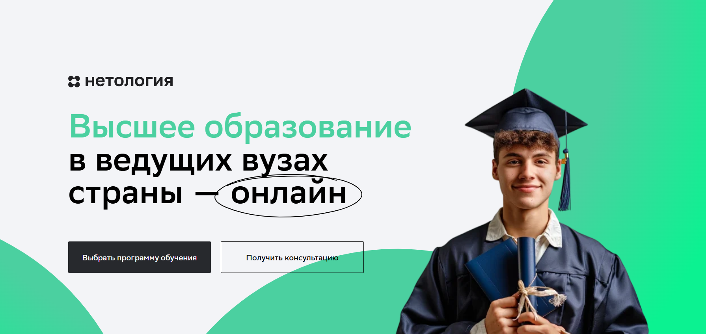
✅ Официальный сайт: netology.ru
- 💸 Стоимость – от 140 000 ₽ до 280 000 ₽ за семестр, возможен образовательный кредит под 3 %
- 📚 Формат – дистанционный формат: видеолекции, вебинары, практические занятия, проекты от компаний, хакатоны и стажировки
- ⏳ Продолжительность – бакалавриат 4 года, магистратура 2 года, программы переподготовки от нескольких месяцев
- 📜 Документ – выпускники получают дипломы государственного образца бакалавра или магистра, а также удостоверения о профессиональной переподготовке
Учебные программы разработаны совместно с ведущими вузами страны, включая НИУ ВШЭ, УрФУ, Университет ИТМО, МФТИ и Президентскую академию. Обучение проходит дистанционно и сочетает теоретическую базу с практическими проектами. Студенты получают доступ к образовательным платформам и могут совмещать учебный процесс с работой. Важная особенность – акцент на практическое применение знаний и развитие профессиональных навыков, что позволяет выпускнику уверенно выйти на рынок труда. Программы ориентированы на современные направления в сфере психологии, менеджмента, ИТ и дизайна. Преподаватели – действующие эксперты, что обеспечивает высокий уровень подготовки. Завершения обучения сопровождается защитой выпускной работы и получением диплома государственного образца.
Направления подготовки:
Онлайн-Бакалавриат:
- Финансы и анализ данных
- Разработка IT‑продуктов и информационных систем
- Программные системы и автоматизация процессов разработки
- Проектный менеджмент
- Медиакоммуникации
Онлайн-магистратура:
- LegalTech: автоматизация юридических процессов
- Кибербезопасность
- Цифровые продукты: создание и развитие
- Управление цифровыми проектами
- Продуктовый дизайн
- Инженерия данных
- Продуктовый маркетинг и аналитика
- Разработка IT-продукта
- Инженерия машинного обучения
- Прикладной искусственный интеллект
- Современные технологии безопасных систем
Преимущества и особенности:
- все занятия проходят дистанционно – в удобном для студента формате;
- поддержка координаторов и кураторов на всех этапах обучения;
- реальные проекты от индустриальных партнеров и возможность прохождения практики;
- гибкий график – студенты могут учиться в любое время и совмещать учебу с работой;
- выпускники получают дипломом государственного образца, равный очному формату;
- бесплатные вводные курсы для знакомства с профессией и процессом обучения;
- доступ к ИТ-комьюнити и кампусам по всей России, возможность участия в хакатонах и бизнес-играх;
- льготы для студентов – отсрочка от армии, льготный проезд, налоговый вычет.
Отзывы учеников:
Студенты отмечают, что обучение проходит дистанционно удобно и без потери качества. Выпускники подчеркивают насыщенные практикой образовательные программы и возможность применять знания в реальных проектах. Среди плюсов часто выделяют гибкость формата, поддержку преподавателей и реальную пользу полученных навыков для будущей профессии психолога или работы в смежных сферах.
Перейти на официальный сайт ВУЗа8. Skillfactory
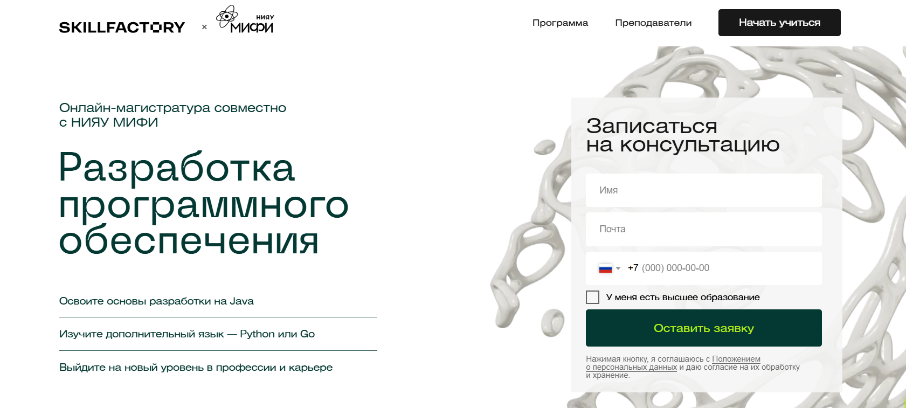
✅ Официальный сайт: new.skillfactory.ru
- 💸 Стоимость – образовательный кредит от 198 ₽/мес., доступные рассрочки и налоговый вычет 13 %
- 📚 Формат – обучение проходит дистанционно: онлайн-лекции, вебинары, практические задания, хакатоны и кейсы от бизнеса
- ⏳ Продолжительность – магистратуры занимают 2 года, переподготовка и ДПО варьируются от нескольких месяцев
- 📜 Документ – выпускники получают диплом государственного образца, а также при желании диплом ДПО
Университеты–партнеры из топ-10 RAEX и платформа Skillfactory предлагают студентам возможность учиться дистанционно и получать дипломы бакалавра и магистра без отрыва от работы. Образовательный процесс построен с применением дистанционных технологий, что позволяет совмещать учебу и профессиональную деятельность. Студенты изучают практическую психологию, информационную безопасность, программирование и другие востребованные направления. Все занятия проходят в удобном формате – часть материалов доступна круглосуточно, а практическое занятие закрепляется кейсами и проектами. По окончании курса студенты получают доступ к центру карьеры и помощь в трудоустройстве. Такой формат обучения дает возможность освоить профессию психолога дистанционно или пройти профессиональную переподготовку в сфере психологии дистанционно, не уступая очному формату по качеству.
Направления подготовки:
Онлайн-магистратура:
- Науки о данных и машинное обучение
- Информационная безопасность
- Обработка естественного языка (NLP) в лингвистике и IT
- Разработка программного обеспечения
- Компьютерное зрение и нейронные сети
- Прикладной анализ данных и машинное обучение
Преимущества и особенности:
- дистанционный формат обучения с доступом к учебным материалам 24/7;
- выпускники получают дипломы государственного образца, подтверждающие квалификацию;
- хакатоны, стажировки и реальные проекты от бизнеса для получения практических навыков;
- центр карьеры помогает выпускнику выйти на рынок труда и найти работу по новой специальности;
- возможность совмещать учебу с работой благодаря гибкому расписанию;
- учебные программы разработаны с учетом современных методов психологической науки и образовательных технологий;
- дополнительные бонусы: отсрочка от армии, льготный проезд, доступ к библиотекам и ресурсам вузов.
Отзывы учеников:
Студенты отмечают, что обучение проходит в удобном формате и дает практические знания, которые можно применять сразу. Часто подчеркивают высокий уровень преподавателей, возможность совмещать учебу с работой и доступность материалов. Выпускники выделяют системное построение программы и поддержку кураторов на протяжении всего процесса обучения.
Перейти на официальный сайт ВУЗа9. Яндекс Практикум
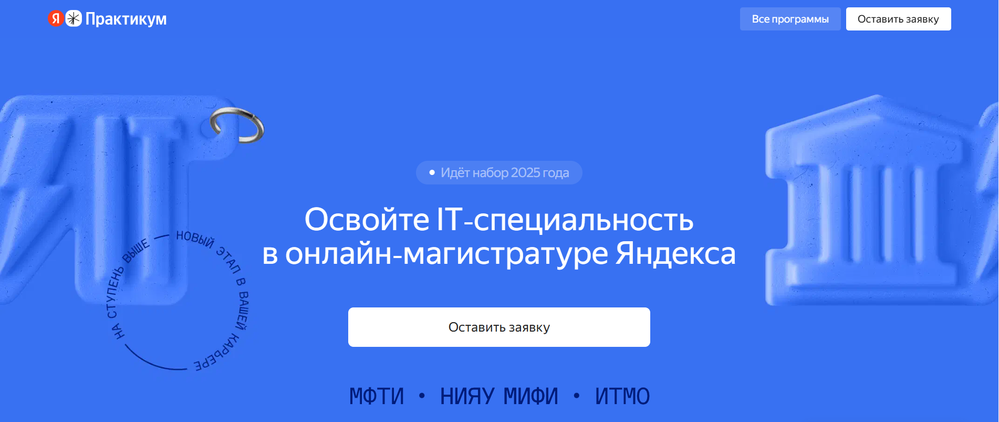
✅ Официальный сайт: practicum.yandex.ru
- 💸 Стоимость – от 200 000 до 299 500 ₽ за семестр, доступны образовательные кредиты с льготной ставкой и налоговый вычет 13 %
- 📚 Формат – дистанционный формат: онлайн-лекции по вечерам, практические задания, проекты, экзамены, консультации экспертов
- ⏳ Продолжительность – программы длятся 2 года, при этом обучение можно совмещать с работой
- 📜 Документ – выпускники получают диплом государственного образца, дающий право претендовать на более высокие должности
Образовательный процесс строится с применением дистанционных технологий и полностью проходит онлайн – от поступления до итоговых экзаменов. Программы магистратуры ориентированы на практическое применение знаний и формирование профессиональных навыков, необходимых для карьерного роста. Студенты получают доступ к лекциям, могут проходить дистанционно практические задания и работать над кейсами вместе с экспертами. Учебный процесс учитывает особенности дистанционного формата и приравнивается к очному обучению. После окончания обучения выпускники получают дипломы, подтверждающие квалификацию, и значительно увеличивают свои шансы на трудоустройство. Занятия проходят на удобных платформах, обучение сопровождается поддержкой кураторов и преподавателей.
Направления подготовки:
Онлайн-магистратура:
- Кибербезопасность
- Управление IT‑продуктами
- Науки о данных и искусственный интеллект
- Фронтенд- и бэкенд-разработка
- DevOps-инженер облачных сервисов
Преимущества и особенности:
- обучение проводится дистанционно, но юридически приравнено к очному формату;
- учебные программы разработаны экспертами Яндекса и ведущих технических вузов;
- студенты изучают современные методы и получают практические навыки на реальных кейсах;
- доступна система перезачета курсов и дисциплин;
- возможность совмещать учебный процесс с работой – расписание гибкое;
- выпускники получают диплом государственного образца, признанный работодателями;
- дополнительно предлагаются вакансии и стажировки у партнёров.
Отзывы учеников:
Студенты отмечают гибкость дистанционного формата и возможность совмещать учебу с работой. Многие положительно отзываются о практических заданиях и мастерской проектов, которые усиливают портфолио. Выпускники подчеркивают, что полученные знания помогают уверенно чувствовать себя на собеседованиях, а диплом магистра повышает конкурентоспособность на рынке труда.
Перейти на официальный сайт ВУЗа10. Московский Институт Технологий и Управления
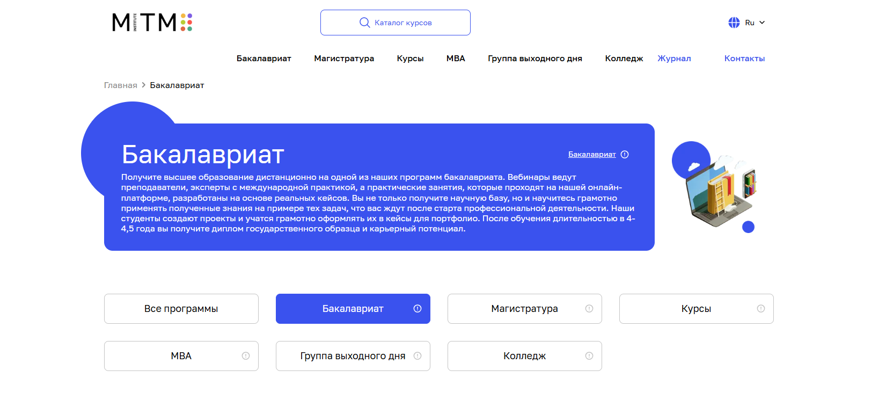
✅ Официальный сайт: mitm.institute
- 💸 Стоимость – от 4500 ₽ в месяц, рассрочка без переплат, предусмотрены льготы и скидки
- 📚 Формат – дистанционный формат: онлайн-видеолекции, вебинары, практические задания и кейсы, консультации с преподавателями и кураторами
- ⏳ Продолжительность – обучение длится 4–4,5 года в зависимости от выбранной программы
- 📜 Документ – выпускники получают дипломы государственного образца, которые вносятся в федеральный реестр
Образовательный процесс в институте построен с применением дистанционных технологий, что позволяет совмещать обучение с работой и личной жизнью. Студенты изучают дисциплины под руководством экспертов-практиков, осваивают современные методы психологической науки и приобретают практические навыки. Обучение проводится с акцентом на практическое применение знаний, студенты проходят практику и создают проекты, которые формируют портфолио. По окончании обучения выпускники получают высшее образование дистанционно и диплом государственного образца, открывающий возможности карьерного роста. Для абитуриентов доступна консультация по поступлению и подбору подходящей образовательной программы.
Направления подготовки:
- Юриспруденция
- Дизайн
- Информатика
- Маркетинг
- Менеджмент
- Строительство
- Теплоэнергетика и теплотехника
- Техносферная безопасность
- Электроэнергетика и электротехника
- Экономика
- Педагогическое образование
- Юриспруденция
- Дизайн
- Информатика
- Маркетинг
- Менеджмент
- Строительство
- Экономика
- Педагогическое образование
Преимущества и особенности:
- обучение проходит дистанционно с применением удобной платформы;
- студенты получают доступ к современным учебным материалам и вебинарам;
- программы ориентированы на практическое применение знаний и формирование профессиональных навыков;
- по окончании обучения выпускники получают дипломы государственного образца;
- возможность совмещать учебу с работой и личной жизнью благодаря гибкому графику;
- поддержка кураторов и преподавателей на всех этапах обучения;
- наличие льгот и привилегий для определенных категорий студентов;
- карьерное сопровождение – помощь в составлении резюме, подготовке к собеседованию и трудоустройстве.
Отзывы учеников:
Студенты отмечают качественное образование, удобную дистанционную форму, практическую направленность занятий и внимательное отношение преподавателей. В отзывах часто подчеркивается возможность совмещать учебу с работой и получение практических знаний, которые помогают в профессии. Многие выпускники указывают, что обучение дает уверенность в себе и новые карьерные перспективы.
Перейти на официальный сайт ВУЗа11. Московский институт профессионального образования
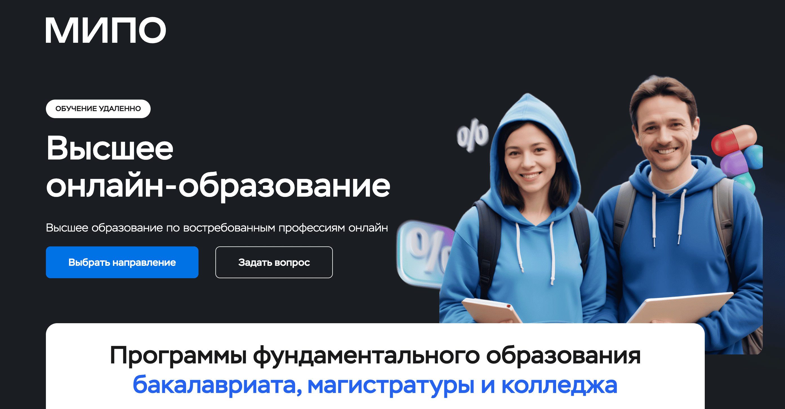
✅ Официальный сайт: mipo.msk.ru
- 💸 Стоимость – от 72 000 руб. в год, предусмотрены гибкие формы оплаты и возможность рассрочки.
- 📚 Формат – дистанционное обучение онлайн: видеолекции, тесты, интерактивные задания, консультации с преподавателями и онлайн-практики.
- ⏳ Продолжительность – бакалавриат 4 года, магистратура 2 года, программы переподготовки и повышения квалификации от 3 месяцев.
- 📜 Документ – диплом государственного образца с приложением на английском языке, квалификация бакалавра или магистра в зависимости от выбранной программы.
Институт предлагает современное онлайн-образование, основанное на инновационных технологиях и высоком уровне преподавания. Программы создаются с учётом требований ведущих работодателей и ориентированы на развитие востребованных компетенций. МИПО обеспечивает возможность получать высшее образование из любой точки мира, участвовать в международных стажировках и карьерных проектах. Университет активно сотрудничает с крупными компаниями, помогая студентам в трудоустройстве. Центр занятости МИПО работает с 2004 года, предоставляя поддержку при составлении резюме и прохождении собеседований.
Направления подготовки:
- Дизайн
- Юриспруденция
- Информатика
- Маркетинг
- Менеджмент
- Строительство
- Теплоэнергетика и теплотехника
- Педагогика
- Робототехника
- Экономика
- Государственное и муниципальное управление
- Лингвистика
- Техносферная безопасность
- Управление в технических системах
- Спорт
Преимущества и особенности:
- официальные дипломы государственного образца с приложением на английском языке;
- онлайн-обучение доступно из любой точки мира;
- актуальные программы, разработанные при участии работодателей;
- практикоориентированное обучение от преподавателей-практиков;
- центр занятости помогает в поиске работы и прохождении стажировок;
- 73 программы обучения для студентов по всей России и СНГ;
- инновационные технологии обучения и исследовательская инфраструктура;
- качественное и доступное образование для всех категорий студентов.
Отзывы учеников:
Студенты МИПО отмечают высокий уровень преподавателей и удобство дистанционного формата. Многие подчеркивают, что полученные знания применимы в работе, а поддержка кураторов делает процесс обучения комфортным. В отзывах часто встречаются слова: «удобно совмещать с работой», «актуальные программы», «реальные навыки и помощь в трудоустройстве».
Перейти на официальный сайт ВУЗа11. Национальная академия дополнительного профессионального образования
✅ Официальный сайт: nadpo.ru
- 💸 Стоимость – предусмотрены скидки до –65 %, рассрочка от 2 до 12 месяцев без переплат от 2 310 рублей в месяц
- 📚 Формат – дистанционный формат обучения: онлайн-лекции, тесты, практические задания, электронные материалы и итоговый экзамен в онлайне
- ⏳ Продолжительность – программы переподготовки от 6 до 24 месяцев, курсы повышения квалификации – от 72 часов
- 📜 Документ – выпускники получают государственный диплом установленного образца, вносимый в федеральный реестр
НАДПО проводит обучение дистанционно с применением современных образовательных технологий. Все программы выстроены так, чтобы студенты получали практические навыки и могли сразу применять их в профессиональной деятельности. Учебный процесс сопровождается опытными преподавателями, среди которых более 80 % – кандидаты и доктора наук. Образовательный процесс строится в удобной онлайн-среде, доступ к материалам открыт в любое время. Студенты изучают практическую психологию, методы психологической диагностики и консультирования, организационную психологию и смежные дисциплины. Благодаря гибкой системе обучения слушатели могут совмещать учебу с работой и другими делами, а также выбирать удобную форму прохождения курсов. По окончании обучения студенты получают дипломы государственного образца, подтверждающие квалификацию. Образование дистанционно обеспечивает доступность и комфорт, что позволяет осваивать профессию психолога и смежные направления в любом удобном месте.
Направления подготовки:
- Психология
- Клиническая психология
- Детская психология
- Семейная психология
- Нейропсихология
- Логопедия
- Дефектология
- Государственное и муниципальное управление
- Менеджмент
- Педагогика
- Дошкольное образование
- Нутрициология
- Бухгалтерский учет
Преимущества и особенности:
- московский диплом государственного образца, ценящийся работодателями;
- обучение проходит полностью дистанционно без необходимости приезжать очно;
- рассрочка без переплат и гибкие условия оплаты;
- доступ к электронной библиотеке и учебным материалам сохраняется бессрочно;
- программы разрабатываются с учетом современных методов психологической практики;
- обучение проводится на удобной образовательной платформе;
- дополнительные скидки для групп, выпускников и льготных категорий граждан;
- свыше 10 000 положительных отзывов в Яндекс, Google и других сервисах.
Отзывы учеников:
Студенты подчеркивают удобный дистанционный формат, доступность материалов и высокую квалификацию преподавателей. Многие отмечают, что обучение помогает получить диплом государственного образца и освоить практические навыки, необходимые для работы в сфере психологии. В отзывах часто встречаются комментарии о качественной поддержке кураторов и возможности совмещать учебу с работой.
Перейти на официальный сайт ВУЗа12. Московский институт профессионального образования
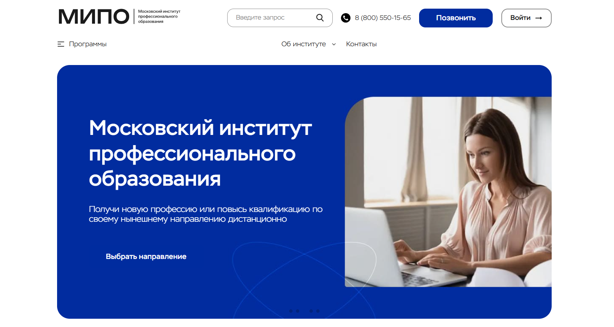
✅ Официальный сайт: mipo.msk.ru
- 💸 Стоимость – скидка до –60 % на все курсы, обсуждается индивидуально, подробности уточняются у специалистов приемной комиссии
- 📚 Формат – дистанционный формат: видеолекции, вебинары, тесты, практические задания, консультации с преподавателями
- ⏳ Продолжительность – обучение проходит от нескольких месяцев на курсах переподготовки до 4 лет на программах бакалавриата
- 📜 Документ – выпускники получают диплом государственного образца, зарегистрированный в Федеральной информационной системе ФРДО, а также международное приложение
Учебное заведение более 12 лет развивает образовательный процесс с применением дистанционных технологий. Здесь студенты изучают современные дисциплины, ориентированные на практическое применение. Образование дистанционно позволяет совмещать учебу и работу, а обучение проводится в удобном режиме онлайн. Программы разработаны так, чтобы слушатели получали дипломы бакалавра или профессиональную переподготовку с практическими навыками. Институт отличается гибкими формами обучения, студенты получают доступ к материалам в любом удобном времени. Психологическому образованию и другим направлениям уделяется особое внимание, что помогает выпускнику успешно строить карьеру.
Направления подготовки:
- Управление бизнесом
- Юриспруденция
- Дизайн
- Бухгалтерия
- Маркетинг
- IT-технологии
- Нутрициология
- Логистика
Преимущества и особенности:
- дистанционное обучение проходит с применением современных образовательных технологий;
- студенты получают дипломом государственного образца с международным приложением;
- обучение проводится в удобной форме, возможна оплата обучения частями;
- акцент на практические знания и профессиональные навыки;
- широкий выбор образовательных программ и профилей подготовки;
- поддержка преподавателей-практиков и доступ к электронным учебным материалам;
- обучение дистанционно позволяет совмещать учебный процесс с личными делами;
- официальная лицензия и признание дипломов на территории России и за рубежом.
Отзывы учеников:
Студенты московской школы чаще всего отмечают удобный дистанционный формат, доступные цены со скидками и практическую направленность. В отзывах подчеркивается, что занятия проходят в любом удобном времени, а преподаватели помогают применять знания на практике. Многие выпускники пишут, что после окончания обучения смогли освоить профессию психолога, пройти дистанционное консультирование и успешно применяют методы психологической помощи в работе.
Перейти на официальный сайт ВУЗа13. Moscow Business Academy
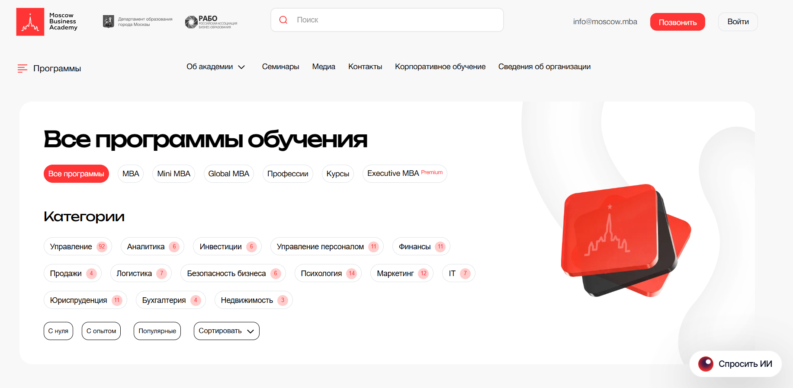
✅ Официальный сайт: moscow.mba
- 💸 Стоимость – от 23 528 ₽ до 558 000 ₽, действуют скидки до –65 %
- 📚 Формат – дистанционный формат, занятия проходят дистанционно через онлайн-платформу, включают видеолекции, тесты, практические задания, вебинары, консультации с преподавателями
- ⏳ Продолжительность – от 1 месяца до 20 месяцев в зависимости от выбранной программы
- 📜 Документ – выпускники получают государственным дипломом установленного образца с регистрацией в ФРДО
Академия предлагает программы профессиональной переподготовки и повышения квалификации для специалистов разных сфер. Обучение проводится с применением дистанционных технологий, что делает образовательный процесс доступным в любом удобном месте. Все образовательные программы разработаны с акцентом на практическое применение и получение диплома государственного образца. Студенты изучают современные методы психологической науки, менеджмента, маркетинга и смежных направлений. Образование дистанционно дает возможность совмещать учебу с работой, а по окончании программы выпускники получают дипломы, признанные в Европе. Учебные материалы обновлены в 2025 году и включают современные методики. Обучение проходит с поддержкой кураторов и практикующих экспертов, что позволяет формировать профессиональные навыки и практические знания. Студенты московской академии отмечают удобную платформу и системный подход к процессу обучения.
Направления подготовки:
- Управление
- Продажи
- Инвестиции
- Маркетинг
- Недвижимость
- Юриспруденция
- Бухгалтерия
- Логистика
- Аналитика
- Психология
- Финансы
- Управление персоналом
- Безопасность бизнеса
- IT
Преимущества и особенности:
- более 165 преподавателей с международным опытом и экспертной практикой;
- гибкие форматы обучения – очный и дистанционный формат с возможностью совмещать учебу и работу;
- выпускники получают дипломом государственного образца, который признается в Европе;
- обеспечивается постоянная поддержка кураторов и преподавателей на всех этапах обучения;
- выпускники получают практические навыки для профессионального роста и карьерного продвижения;
- база современных образовательных технологий и удобная платформа для дистанционного формата;
- дополнительные профессиональные программы и актуальные образовательные материалы 2025 года;
- более 12 000 выпускников по всему миру уже успешно применяют знания на практике.
Отзывы учеников:
Студенты отмечают качественное дистанционное обучение, доступность преподавателей и практическую направленность курсов. В отзывах часто подчеркивают, что материалы можно сразу использовать в работе, а кураторы помогают пройти дистанционное обучение до конца. Положительно оцениваются гибкие форматы, современная платформа и возможность совмещать учебу с карьерой.
Перейти на официальный сайт ВУЗа14. Eduson Academy
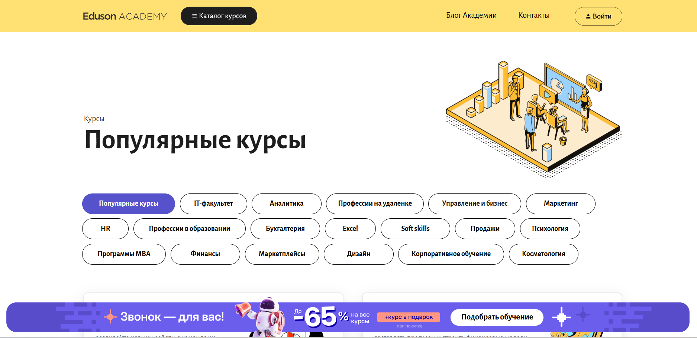
✅ Официальный сайт: eduson.academy
- 💸 Стоимость – зависит от выбранного курса, доступные тарифы с возможностью рассрочки и скидок, а также оплата онлайн без комиссии
- 📚 Формат – обучение проходит в дистанционном формате: видеолекции, онлайн-задания, тесты, вебинары, разборы кейсов и поддержка преподавателей
- ⏳ Продолжительность – программы переподготовки занимают от 4 месяцев, курсы до 1 года; бакалавриат и магистратура от 3 до 4,5 лет
- 📜 Документ – выпускники получают дипломы государственного образца, свидетельства о переподготовке или сертификаты о повышении квалификации
Образовательный процесс построен с применением дистанционных технологий, что делает его удобным для студентов с разным уровнем подготовки. Акцент сделан на практические знания и навыки, которые можно применять сразу после окончания программы. Обучение проводится на удобной платформе, где студенты получают доступ к современным учебным материалам и могут учиться в любом удобном режиме. Использование актуальных методов психологической и бизнес-практики помогает выпускникам уверенно применять полученные знания в реальной профессиональной среде. Курсы разработаны с учетом требований рынка труда и ориентированы на развитие востребованных компетенций. Студенты отмечают, что обучение проходит системно и шаг за шагом подводит к практическому применению знаний.
Направления подготовки:
- Менеджмент
- Финансы
- HR и управление персоналом
- Маркетинг
- Бизнес-аналитика
- IT и разработка
- Дизайн
- Soft skills
Преимущества и особенности:
- все программы реализуются с применением дистанционного формата и удобной образовательной платформы;
- выпускники получают государственный диплом или сертификат установленного образца;
- обучение проходит в сопровождении опытных преподавателей и практиков;
- гибкий график позволяет совмещать учебу и работу;
- разнообразие программ – от высших психологических и бизнес-направлений до IT и дизайна;
- доступ к учебным материалам и поддержке кураторов сохраняется после окончания курса;
- акцент на практическом применении знаний и подготовке специалистов к работе в современных организациях.
Отзывы учеников:
Студенты отмечают удобный дистанционный формат, качественные материалы и практическую направленность программ. Многие выделяют поддержку преподавателей и возможность совмещать учебу с работой. Популярны отзывы о том, что курсы помогают освоить профессию психолога дистанционно и применить знания в частной практике или на новом месте работы.
Перейти на официальный сайт ВУЗа15. АНО «НИИДПО»
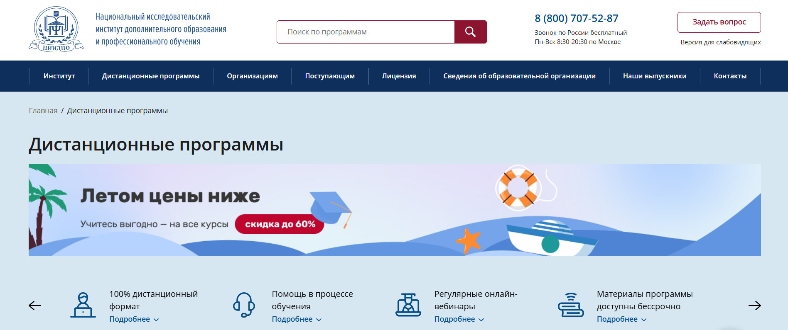
✅ Официальный сайт: niidpo.ru
- 💸 Стоимость – программы от 700 руб. за повышение квалификации, от 6900 руб. за переподготовку, от 4700 руб. за профессиональное обучение
- 📚 Формат – дистанционный формат: онлайн-вебинары, видеолекции, тесты, практические задания, доступ к образовательной платформе и мобильному приложению
- ⏳ Продолжительность – от нескольких недель до 2 лет в зависимости от выбранной программы и уровня образования
- 📜 Документ – дипломы и удостоверения государственного образца, внесенные в ФИС ФРДО, действительные на территории всей России
Институт специализируется на подготовке специалистов по современным направлениям психологии, педагогики, медицины, управления и других востребованных сфер. Образовательный процесс строится на применении дистанционных технологий, что позволяет совмещать учебу с работой и личной жизнью. Студенты получают дипломы государственного образца, подтвержденные федеральным реестром. Обучение проводится с акцентом на практические навыки и профессиональные компетенции. К занятиям подключаются эксперты-практики с многолетним опытом работы. Каждое обучение проходит в удобной онлайн-среде с доступом к материалам в любое время. Формат подходит для получения высшего образования и профессиональной переподготовки. Выпускники получают востребованные знания и возможность работать по новой профессии сразу после окончания программы.
Направления подготовки:
- Архитектура и строительство
- Бухгалтерский учет
- Дефектология
- Менеджмент
- Педагогика
- Психология
- Социальная работа
- Физическая культура и спорт
- Экономика и финансы
Преимущества и особенности:
- официальная лицензия на образовательную деятельность и государственные дипломы;
- дистанционная форма обучения с доступом к материалам в любом удобном режиме;
- сопровождение преподавателей и онлайн-кураторов на протяжении всего процесса обучения;
- практикоориентированные курсы, которые можно применять в профессиональной деятельности;
- внесение сведений о документах в ФИС ФРДО в течение 60 дней после окончания обучения;
- гибкая система оплаты и широкий выбор программ для специалистов разных сфер;
- возможность начать карьеру по новой профессии сразу после получения диплома.
Отзывы учеников:
Студенты отмечают доступность дистанционного формата, внимание кураторов и актуальность программ. Многие пишут, что обучение проходит удобно и помогает совмещать учебу с работой. Выпускники подчеркивают ценность практических знаний и официальные дипломы, которые признаются работодателями.
Перейти на официальный сайт ВУЗа16. Talentsy
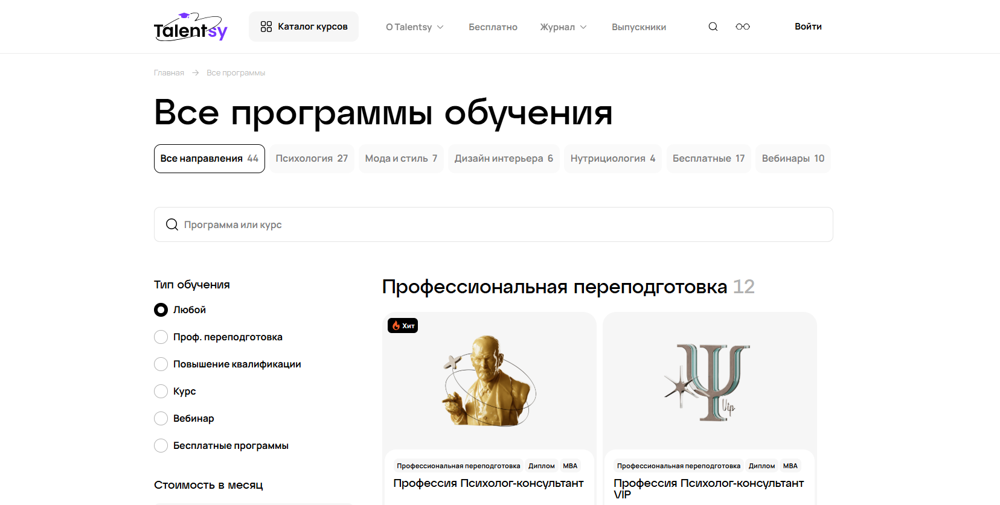
✅ Официальный сайт: talentsy.ru
- 💸 Стоимость – от 0 ₽ до 29 900 ₽ в месяц, возможна рассрочка без переплат через банки-партнеры
- 📚 Формат – дистанционный формат: онлайн-лекции, вебинары, тесты, практические занятия, консультации преподавателей
- ⏳ Продолжительность – от 1 месяца до 24 месяцев в зависимости от программы
- 📜 Документ – выпускники получают дипломы MBA, удостоверения, сертификаты или свидетельства государственного образца
Учебный процесс в Talentsy организован с применением дистанционных технологий, что позволяет совмещать учебу с работой. Образовательный процесс строится по современным стандартам и соответствует ФГОС. Студенты получают доступ к учебным материалам в любом удобном формате, обучение проводится с упором на практические навыки. Здесь можно освоить профессию психолога дистанционно, пройти профессиональную переподготовку или повышение квалификации. Выпускники получают дипломом государственного образца, подтверждающий квалификацию. Обучение проходит на удобной платформе, занятия проходят онлайн с поддержкой кураторов и экспертов. Такой подход открывает возможности получения диплома и профессионального развития для специалистов разных уровней образования. Программы позволяют освоить практическую психологию, нутрициологию, моду и дизайн в дистанционной форме без привязки к очному формату.
Направления подготовки:
- Психология
- Мода и стиль
- Дизайн интерьера
- Нутрициология
Преимущества и особенности:
- дистанционное обучение с возможностью совмещать учебу и работу;
- официальные дипломы и сертификаты государственного образца;
- поддержка преподавателей-практиков с многолетним опытом;
- налоговый вычет 13 % за оплату обучения;
- удобная платформа и гибкие форматы прохождения обучения;
- курсы и программы соответствуют профстандартам и современным методам психологической науки;
- более 25 образовательных программ по направлениям психологии, моды, нутрициологии и дизайна.
Отзывы учеников:
Студенты отмечают удобный дистанционный формат, качественное образование и практические задания, которые можно применять в работе. Многие подчеркивают доступность материалов и поддержку преподавателей. Среди плюсов чаще всего называют гибкость графика, возможность совмещать учебу с личными делами и получение диплома государственного образца.
Перейти на официальный сайт ВУЗа17. Национальный центральный институт развития дополнительного образования
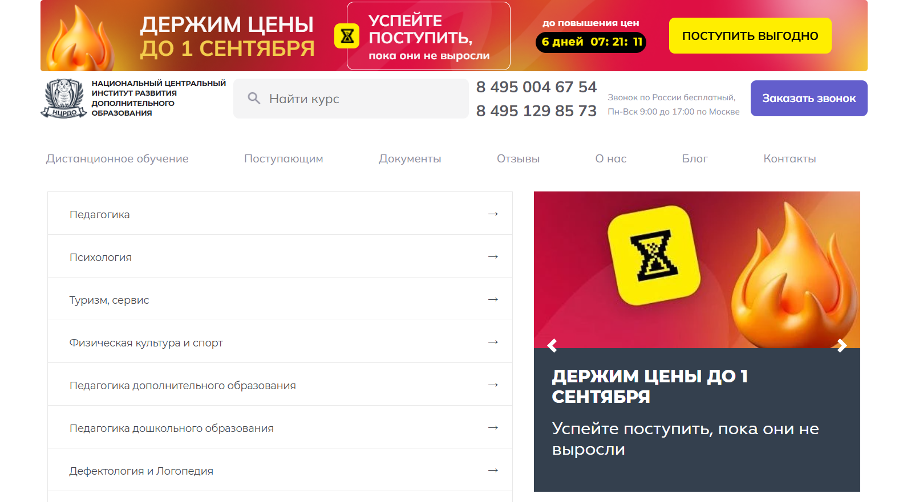
✅ Официальный сайт: ncrdo.ru
- 💸 Стоимость – программы доступны по ценам от 6 500 ₽, предусмотрены акции и скидки до 70 %
- 📚 Формат – дистанционные технологии обучения: видеолекции, вебинары, тесты, практические задания, итоговые экзамены онлайн
- ⏳ Продолжительность – курсы переподготовки от 250 часов, повышение квалификации от 16 часов, программы длительностью до двух лет
- 📜 Документ – выпускники получают дипломы государственного образца или удостоверения московского образовательного учреждения
Институт реализует образовательные программы в дистанционном формате, сохраняя при этом высокий уровень качества. Обучение проводится с применением современных образовательных технологий и ориентировано на формирование практических навыков. Студенты получают доступ к учебным материалам в онлайне и могут совмещать учебный процесс с работой. Программы охватывают разные направления психологии, педагогики, экономики и технических специальностей, что позволяет освоить профессию психолога или пройти профессиональную переподготовку. Образование дистанционно в НЦРДО помогает выпускникам получить диплом государственного образца и повысить востребованность на рынке труда. Обучение проходит в удобном для студентов графике, а занятия проходят с применением практического опыта преподавателей.
Направления подготовки:
- Педагогика
- Психология
- Физическая культура и спорт
- Дефектология и логопедия
- Журналистика и блогинг
- Технические специальности
- Управление и экономика
Преимущества и особенности:
- дистанционный формат обучения с доступом к материалам 24/7;
- московский диплом установленного образца;
- все программы разработаны с учетом современных требований и практического применения;
- возможность совмещать учебу и работу без отрыва от основной деятельности;
- преподаватели – доктора и кандидаты наук с опытом практической работы;
- гибкие условия оплаты, включая рассрочку без участия банков;
- поддержка студентов на протяжении всего процесса обучения;
- партнерство с ведущими организациями и признание в «Сколково».
Отзывы учеников:
Студенты отмечают удобный дистанционный формат, качественные учебные материалы и поддержку преподавателей. Чаще всего выделяют доступность образования, возможность получить диплом государственного образца и применение знаний на практике. Выпускники подчеркивают, что обучение проходит дистанционно и позволяет совмещать его с работой, при этом стоимостью обучения довольны большинство слушателей.
Перейти на официальный сайт ВУЗа18. Институт профессионального образования (ИПО)
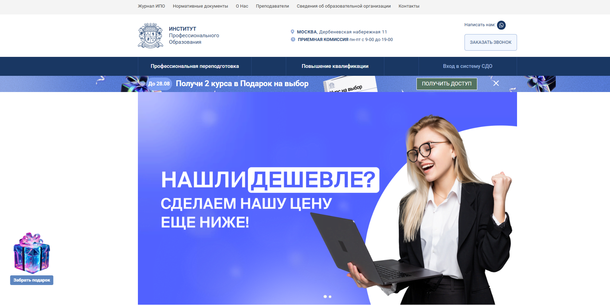
✅ Официальный сайт: ipo.msk.ru
- 💸 Стоимость – действует система скидок до 60 %, возможны индивидуальные условия оплаты
- 📚 Формат – обучение проходит в дистанционном формате: онлайн-лекции, вебинары, методички, практические задания, консультации с кураторами
- ⏳ Продолжительность – переподготовка и повышение квалификации занимают от 3 месяцев до 1,5 лет; программы бакалавриата – от 3,5 до 4,5 лет
- 📜 Документ – выпускники получают дипломы и удостоверения государственного образца, внесенные в федеральный реестр
Институт профессионального образования предлагает студентам широкий выбор направлений, ориентированных на применение дистанционных технологий и практических навыков. Образовательный процесс построен так, чтобы совмещать учебу с работой и другими делами. Учебные материалы представлены в удобной форме – текстовые, графические и видеоформаты, а практическое занятие закрепляет теоретическую базу. Студенты получают доступ к личному кабинету, где доступна коммуникация с кураторами и преподавателями. После окончания курса выпускники получают дипломы, подтверждающие квалификацию в сфере психологии, педагогики, менеджмента, экономики и других направлений. Образование дистанционно открывает равные возможности для жителей Москвы и регионов России. Уже тысячи слушателей отмечают высокое качество программ, практическое применение знаний и доступность обучения.
Направления подготовки:
- Психология
- Юриспруденция
- Информационные технологии
- Государственное и муниципальное управление
- Менеджмент
- Педагогика
- Маркетинг
- Бухгалтерское дело
- Строительство
- Экология
- Медицина
Преимущества и особенности:
- обучение проводится дистанционно в удобном для студента формате;
- куратор сопровождает учебный процесс и помогает в организации;
- по окончании обучения выпускники получают диплом государственного образца;
- обширный выбор направлений – от гуманитарных до технических специальностей;
- программы акцентированы на практическом применении и получении профессиональных навыков;
- обучение можно совмещать с работой, без отрыва от основной деятельности;
- возможность выбрать курсы для дополнительного профессионального развития;
- доступ к современным образовательным платформам и материалам в онлайне.
Отзывы учеников:
Выпускники отмечают удобный дистанционный формат, доступность преподавателей и гибкий график. Многие подчеркивают, что обучение помогло освоить практические навыки и успешно применить их в работе. Популярны отзывы о том, что студенты получают качественные знания, а дипломы позволяют повысить квалификацию или сменить профессию. Чаще всего хвалят сопровождение кураторов и возможность совмещать учебу с основной деятельностью.
Перейти на официальный сайт ВУЗа19. Moscow Business School

✅ Официальный сайт: mbschool.ru
- 💸 Стоимость – варьируется в зависимости от направления, возможны корпоративные скидки и акции
- 📚 Формат – дистанционный формат, очные модули, интенсивы, вебинары, практические задания, работа с кейсами
- ⏳ Продолжительность – от коротких курсов повышения квалификации (несколько недель) до долгосрочных программ магистратуры и MBA (2 года)
- 📜 Документ – выпускники получают государственным дипломом или сертификатом международного образца после успешного прохождения обучения
Moscow Business School более 18 лет занимается подготовкой специалистов в разных сферах управления и психологии. Здесь студенты получают доступ к образовательным платформам с современными материалами и дистанционным обучением, что позволяет совмещать учебный процесс с работой. Программы направлены на развитие практических навыков и профессиональных компетенций. Большая часть занятий проходит дистанционно с применением интерактивных технологий, но также доступны форматы очного обучения и интенсивов. Выпускники отмечают высокий уровень преподавателей, большинство из которых – эксперты-практики с многолетним опытом. Образовательный процесс построен так, чтобы студенты получали не только знания, но и умения для применения их в сфере психологии и управления. После окончания программы студенты проходят практику и получают дипломы государственного образца.
Направления подготовки:
- Психология бизнеса
- Управление проектами
- Финансы
- Стратегическое управление
- Ораторское искусство
- MBA (Master of Business Administration)
Преимущества и особенности:
- обучение проходит с применением дистанционных технологий и удобной образовательной платформой;
- студенты получают дипломы бакалавра, магистратуры или документы о профессиональной переподготовке;
- на факультете психологии доступно несколько направлений для подготовки практического психолога;
- обучение проводится в любом удобном формате – дистанционно или очно;
- выпускники получают карьерное сопровождение и поддержку специалистов;
- учебный процесс сочетает теорию и практическое занятие с кейсами из реальных ситуаций;
- возможность пройти дистанционное образование с дипломом государственного образца.
Отзывы учеников:
Студенты отмечают практическое применение знаний, удобные форматы обучения и гибкость графика. Многие подчеркивают, что обучение дистанционно не уступает очному формату по качеству материалов и взаимодействию с преподавателями. Популярные отзывы связаны с карьерным ростом и применением полученных навыков уже в процессе работы.
Перейти на официальный сайт ВУЗа20. Русская Школа Управления
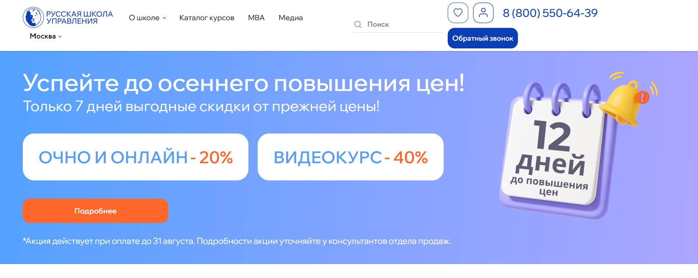
✅ Официальный сайт: uprav.ru
- 💸 Стоимость – действует скидка до 40 %, специальные акции
- 📚 Формат – очные занятия, дистанционный формат, видеокурсы, корпоративное обучение, практические задания, методические материалы
- ⏳ Продолжительность – краткосрочные курсы от 5 дней, программы переподготовки от 3 до 6 месяцев, MBA и Mini MBA от полугода до двух лет
- 📜 Документ – выпускники получают дипломы государственного образца и сертификаты международного качества ISO 9001
Учебное заведение ежегодно обучает тысячи слушателей в различных направлениях бизнес-образования. Образовательный процесс строится с применением дистанционных технологий и очного формата, что позволяет студентам выбирать удобную форму обучения. Курсы ориентированы на практическое применение знаний и отработку профессиональных навыков. Выпускники получают дипломы и могут продолжить карьеру в компаниях различного профиля. Дистанционное обучение дает возможность осваивать новые программы в любом удобном месте и совмещать учебу с работой. При этом занятия проходят под руководством преподавателей-практиков, которые делятся актуальным опытом из реальной сферы бизнеса. Студенты изучают современные методы управления, получают доступ к учебным материалам и участвуют в практических занятиях. По окончании курса слушатели осваивают практическую психологию управления, получают высшее психологическое образование или дополнительную профессиональную переподготовку. Обучение проводится на образовательных платформах, обеспечивающих удобный процесс взаимодействия.
Направления подготовки:
- MBA и Mini MBA (общее управление, финансы, строительство, персонал, безопасность, девелопмент)
- Профессиональная переподготовка: управление персоналом, бизнес-аналитика, руководитель отдела продаж, корпоративное право
- Курсы повышения квалификации по управленческим и организационным направлениям
Преимущества и особенности:
- лицензия на образовательную деятельность и международный сертификат качества ISO 9001;
- все программы ориентированы на практическое применение и современные методы психологической подготовки;
- более 1300 преподавателей-практиков из ведущих компаний России и СНГ;
- гибкие цены, акции и возможность пройти дистанционное обучение;
- ежегодно более 15 000 слушателей проходят обучение в различных формах;
- доступ к учебным материалам в онлайне и очном формате;
- выпускники получают диплом государственного образца, подтвержденный лицензией;
- современные образовательные технологии и удобная платформа обучения.
Отзывы учеников:
Студенты отмечают практическую направленность курсов, насыщенность лекций полезными материалами и высокий уровень преподавателей. Многие подчеркивают, что обучение дистанционно удобно совмещать с работой. Выпускники пишут о росте профессиональных навыков, получении практического опыта и уверенности в применении знаний. Среди плюсов также выделяют доступные форматы, современный учебный процесс и возможность выбрать курсы по индивидуальным потребностям.
Перейти на официальный сайт ВУЗа21. АПОК
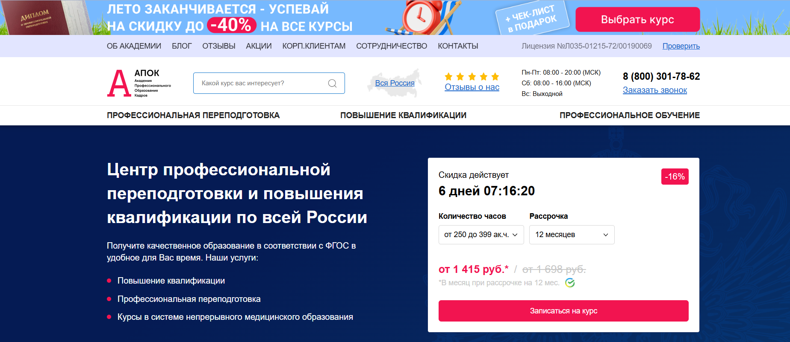
✅ Официальный сайт: apokdpo.ru
- 💸 Стоимость – действует система скидок, доступна рассрочка на 6 или 12 месяцев без переплат от 4998 рублей в месяц
- 📚 Формат – дистанционный формат: онлайн-лекции, тесты, задания, доступ к образовательным платформам 24/7, поддержка кураторов
- ⏳ Продолжительность – от 250 до 399 академических часов, возможны ускоренные и длительные программы в зависимости от направления
- 📜 Документ – выпускники получают государственный диплом о профессиональной переподготовке или удостоверение о повышении квалификации
Учебный центр предоставляет программы, которые позволяют студентам пройти дистанционное обучение и освоить профессию психолога или смежные направления. Образовательный процесс выстроен на основе современных методов психологической подготовки с применением дистанционных технологий. Студенты получают доступ к удобной платформе, где обучение проходит по гибкому графику. Программы нацелены на формирование профессиональных навыков и практических знаний, которые востребованы в сфере психологии и других гуманитарных направлениях. При успешном прохождении обучения выпускники получают дипломы государственного образца, что открывает путь к трудоустройству в центрах психологической помощи или частной практике. Учебные материалы соответствуют требованиям ФГОС, а по окончании курса студенты проходят итоговое тестирование. Психология дистанционно становится доступной в любом удобном формате, что позволяет совмещать учебу с работой. Слушатели отмечают, что обучение проводится с акцентом на практическое занятие и освоение методов психологической диагностики.
Направления подготовки:
- Агрономия
- Архитектура
- Бухгалтерское дело
- Ветеринария
- Горное дело
- Госзакупки
- Информационные технологии
- Медицина
- Менеджмент
- Педагогика
- Юриспруденция
Преимущества и особенности:
- официальная лицензия Министерства образования РФ и дипломы государственного образца;
- обучение проходит полностью дистанционно с применением образовательных технологий;
- студенты получают доступ к удобной платформе в любое время;
- выпускники получают дипломы, зарегистрированные в федеральном реестре;
- возможность оплатить обучение в рассрочку без переплат;
- поддержка преподавателей и кураторов на протяжении всего процесса обучения;
- акцент на практическом применении знаний и формирование профессиональных навыков.
Отзывы учеников:
Выпускники отмечают удобный дистанционный формат, гибкий график, доступ к учебным материалам и качественную поддержку преподавателей. Многие подчеркивают, что по окончании обучения получают дипломы государственного образца и практические навыки, которые помогают начать работу в сфере психологии.
Перейти на официальный сайт ВУЗа22. Национальный институт переподготовки и повышения квалификации кадров в сфере экономики и финансов
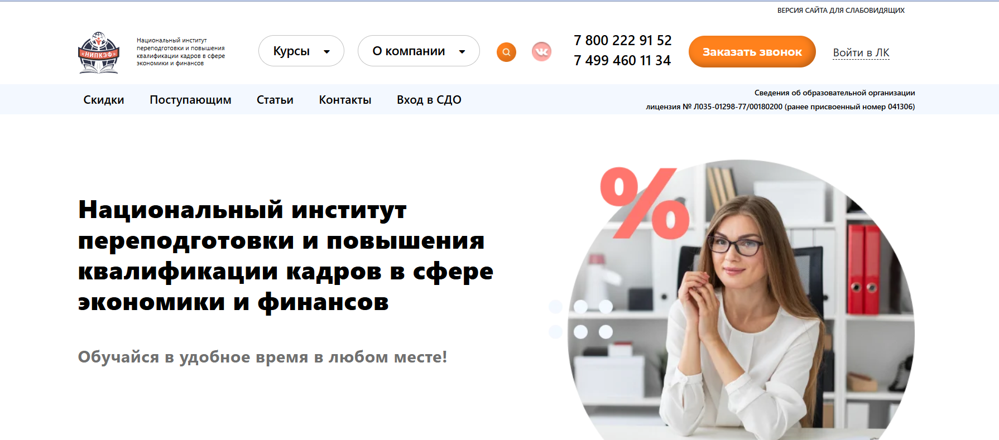
✅ Официальный сайт: nipkef.ru
- 💸 Стоимость – предусмотрены скидки до 10 % для пенсионеров и корпоративных групп, а также рассрочка на срок от 2 до 12 месяцев без скрытых платежей
- 📚 Формат – обучение проводится дистанционно: онлайн-лекции, вебинары, практические задания, тестирование, доступ к материалам 24/7
- ⏳ Продолжительность – переподготовка и повышение квалификации занимают от нескольких месяцев; программы высшего образования рассчитаны на 3–4,5 года
- 📜 Документ – выпускники получают диплом или удостоверение государственного образца московской образовательной организации
Институт работает в дистанционном формате, используя современные образовательные технологии. Образование доступно в любом удобном месте и позволяет совмещать учебный процесс с работой. Здесь студенты получают не только теоретические знания, но и практические навыки, необходимые для профессионального развития. Благодаря опыту преподавателей, среди которых большинство кандидаты и доктора наук, акцент сделан на практическое применение знаний. Учебные программы ориентированы на требования работодателей, поэтому выпускники успешно осваивают профессию и применяют полученные навыки в сфере психологии, экономики и менеджмента. Образовательный процесс построен так, чтобы студенты могли учиться дистанционно и при этом получать качественное образование, сравнимое с очным форматом. После окончания обучения выпускники получают дипломы установленного образца, что подтверждает высокий уровень подготовки.
Направления подготовки:
- Профессиональная переподготовка
- Государственное и муниципальное управление
- Государственные закупки
- Менеджмент
- Экономика
- Повышение квалификации
- Аудит
- Курсы 1С
Преимущества и особенности:
- все образовательные программы соответствуют ФГОС и современным стандартам;
- обучение проходит с применением дистанционных технологий и доступом к материалам в режиме 24/7;
- дипломы государственного образца повышают востребованность выпускников на рынке труда;
- возможность рассрочки и индивидуальных скидок делает стоимость обучения доступной;
- преподаватели – кандидаты и доктора наук с опытом работы в профессиональной сфере;
- удобная форма онлайн-обучения позволяет совмещать учебу и работу;
- акцент на практическом применении знаний и формировании профессиональных навыков.
Отзывы учеников:
Студенты в отзывах отмечают высокий уровень преподавателей, удобный дистанционный формат и доступность учебных материалов. Многие подчеркивают, что обучение проходит комфортно, а полученные знания помогают в карьерном росте. Отдельно выделяют возможность совмещать учебу с работой и то, что выпускники получают дипломы государственного образца.
Перейти на официальный сайт ВУЗа23. SF Education
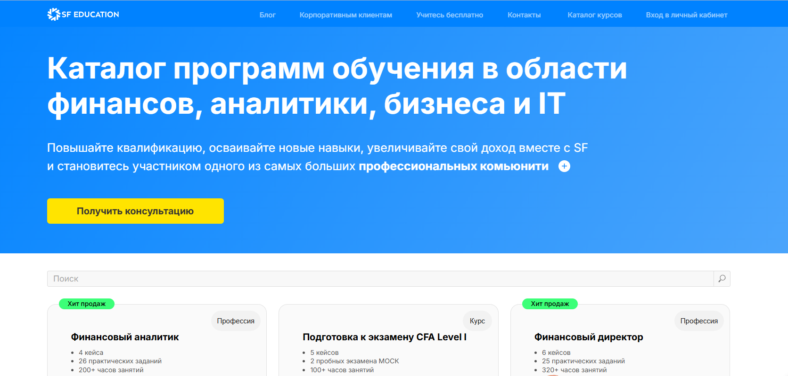
✅ Официальный сайт: sf.education
- 💸 Стоимость – от 2 406 рублей в месяц - до –75 % от стандартной цены, возможна рассрочка на 18 месяцев и дополнительная скидка при полной оплате
- 📚 Формат – дистанционный формат, занятия проходят онлайн, включают видеолекции, практические задания, тесты, кейсы и консультации
- ⏳ Продолжительность – от нескольких месяцев до двух лет в зависимости от выбранной программы, включая интенсивы и долгосрочные курсы
- 📜 Документ – выпускники получают дипломы государственного образца о профессиональной переподготовке и сертификаты о повышении квалификации
Образовательный центр ориентирован на дистанционное обучение с применением современных технологий. Образовательный процесс построен так, чтобы студенты получали практические знания и профессиональные навыки для дальнейшего карьерного развития. Все программы разработаны совместно с практикующими экспертами, что обеспечивает актуальность и практическое применение материалов. Студенты получают доступ к удобной платформе, где обучение проходит в любом удобном режиме. По окончании курса выпускники получают дипломы государственного образца, подтверждающие квалификацию. Благодаря дистанционной форме можно совмещать учебу с работой и личными делами, а качественные учебные материалы помогают осваивать профессию на высоком уровне. Учебный процесс поддерживается наставниками и кураторами, что делает обучение максимально комфортным.
Направления подготовки:
- Финансовая аналитика
- Бизнес-анализ
- Инвестиционный анализ
- Кредитный анализ
- Бухгалтерия
- Цифровой финансовый менеджмент
- Трейдинг и инвестиции
- Data Science и анализ данных
Преимущества и особенности:
- обучение проводится дистанционно с использованием современных образовательных технологий;
- выпускники получают дипломом государственного образца с регистрацией в реестре;
- студенты изучают дисциплины с акцентом на практическое применение знаний;
- все образовательные программы сопровождаются консультациями и поддержкой преподавателей;
- стоимость обучения доступна благодаря системе рассрочек и скидок;
- обучение проводится в удобном онлайн-формате, занятия проходят на современной платформе;
- возможность освоить профессию дистанционно без привязки к очному формату;
- акцент на профессиональное развитие и получение практического опыта.
Отзывы учеников:
Студенты отмечают удобную форму обучения и доступные цены. Многие подчеркивают, что обучение проходит дистанционно, но при этом материал подается качественно и системно. Отмечают насыщенные практические задания, современные методы преподавания и поддержку кураторов. Популярны положительные отзывы о том, что после окончания обучения выпускники получают дипломы государственного образца и успешно применяют знания на практике.
Перейти на официальный сайт ВУЗаЧто такое высшее образование дистанционно?
Высшее образование дистанционно – это форма обучения, при которой учебный процесс проходит с применением дистанционных технологий. Студенты получают доступ к образовательным платформам, учебным материалам и практическим занятиям в онлайне. Такой формат позволяет совмещать учебу с работой, семьей и другими делами, сохраняя качество образовательного процесса.
Какие преимущества имеет дистанционный формат обучения по сравнению с очным форматом?
Дистанционный формат дает возможность учиться в любом удобном месте и в любое время. В отличие от очного формата, студенту не нужно посещать занятия лично — все лекции и семинары доступны онлайн. При этом занятия проходят с использованием современных методов и интерактивных инструментов, что делает процесс обучения удобным и эффективным.
Можно ли получить диплом государственного образца при обучении дистанционно?
Да, студенты, которые проходят обучение дистанционно, получают дипломы государственного образца. После окончания обучения выпускники получают тот же документ, что и при очной форме. Такой диплом подтверждает квалификацию и открывает возможность трудоустройства в государственных и частных организациях.
На каких образовательных платформах проходят программы дистанционного высшего образования?
Образовательный процесс организован через современные образовательные платформы и системы дистанционного обучения. Студенты получают доступ к видео-лекциям, учебным материалам, практическим заданиям и тестам. Благодаря удобной платформе можно изучать дисциплины в любом удобном месте и темпе.
Можно ли получить высшее образование и профессию психолога дистанционно?
Да, профессия психолога может быть получена через образование дистанционно. Студенты изучают теоретические дисциплины и практическую психологию, проходят тренинги и практическое занятие онлайн. По окончании обучения проходит государственная аттестация, и выпускники получают диплом психолога.
Какие направления психологии можно изучать дистанционно?
На факультете психологии можно изучать такие направления, как клиническая психология, психология личности, возрастная психология, детская психология, социальная психология, семейная психология и организационная психология. Студенты получают знания по методам психологической диагностики и методикам психологической помощи.
Можно ли пройти профессиональную переподготовку дистанционно?
Да, профессиональную переподготовку можно пройти полностью в дистанционной форме. Обучение проходит в удобном темпе, а по успешном прохождении слушатели получают диплом государственного образца, который дает право работать в новой сфере.
Как проходит практика при обучении в онлайн-ВУЗе на программе высшего образования?
Студенты проходят практику в психологических центрах, школах, социальных организациях или онлайн-кабинетах. Благодаря этому формируются практические навыки и приобретается практический опыт, который помогает в дальнейшем трудоустройстве.
Можно ли получить качественное высшее образование онлайн?
Да, современные высшие учебные заведения используют дистанционные технологии, которые позволяют получить качественное образование. Студенты изучают дисциплины по тем же учебным программам, что и в очном обучении, но в удобной форме.
Сколько стоит онлайн-обучение?
Стоимость обучения зависит от выбранного направления и вуза. Обычно образование дистанционно обходится дешевле, чем очное. При этом сохраняется высокий уровень психологического образования и доступ к учебным материалам. Многие институты предлагают рассрочку и скидки.
Какие профессиональные навыки можно получить дистанционно?
Студенты получают практические знания и профессиональные навыки в области психологического консультирования, семейного консультирования, организационной психологии и психологической диагностики. Практическое применение знаний отрабатывается на онлайн-занятиях и стажировках.
Можно ли совмещать учебу и работу при дистанционном обучении?
Да, совмещать учебу в ВУЗе на программе высшего образования и работу удобно благодаря онлайн форме. Учебный процесс организован так, что студент может заниматься в любом удобном месте и времени. Такой подход особенно важен для взрослых студентов, уже работающих в сфере психологии или смежных профессиях.
Какие возможности трудоустройства открываются после получения высшего онлайн-образования?
После получения диплома выпускники могут работать в центрах психологической помощи, школах, медицинских организациях, заниматься частной практикой или открыть свой кабинет. Выпускники получают возможность реализовать себя в разных профессиях психолога и продолжить профессиональное развитие.
------------------------------------------------
Реклама. Информация о рекламодателе по ссылкам в статье.